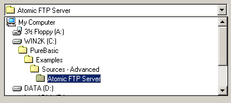

ExplorerComboGadget()
Syntax
Result = ExplorerComboGadget(#Gadget, x, y, Width, Height, Directory$, [, Flags])Description
Creates a ComboBox that lets you display a path and all its parent folders, so the user can choose one of them. You can find such a ComboBox, for example, in the OpenFileRequester().
Parameters
#Gadget A number to identify the new gadget. #PB_Any can be used to auto-generate this number. x, y, Width, Height The position and dimensions of the new gadget. Directory$ The initial displayed directory (must be set as full path), an empty string specifies the root folder.
If the #PB_Explorer_DrivesOnly flag is set, Directory$ may only be a drive letter. Everything that follows the drive letter in this case will be ignored.Flags (optional) Flags to modify the gadget behavior. This can be a combination of the following values: #PB_Explorer_DrivesOnly : The gadget will only display drives to choose from. #PB_Explorer_Editable : The gadget will be editable with an autocomplete feature. With this flag set, it acts exactly like the one in Windows Explorer. #PB_Explorer_NoMyDocuments: The 'My Documents' Folder will not be displayed as a separate item.
Return value
Returns nonzero on success and zero on failure. If #PB_Any was used as the #Gadget parameter then the return-value is the auto-generated gadget number on success.
Remarks
The following functions can be used to control the gadget:
- GetGadgetText(): Get the currently displayed directory. Use this to check what the user has selected after you get an event for this Gadget.
- SetGadgetText(): Changes the currently displayed directory.
Example
If OpenWindow(0, 0, 0, 400, 45, "ExplorerComboGadget", #PB_Window_SystemMenu | #PB_Window_ScreenCentered) ExplorerComboGadget(0, 10, 10, 380, 25, GetHomeDirectory(), #PB_Explorer_Editable) Repeat Event = WaitWindowEvent() Until Event = #PB_Event_CloseWindow EndIf
See Also
GetGadgetText(), SetGadgetText(), ExplorerListGadget(), ExplorerTreeGadget(), ComboBoxGadget()
Supported OS
All